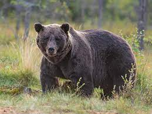
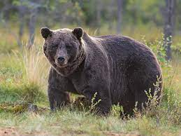
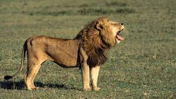

Bears
 

Bears are a group of large mammals found all over the world in many different habitats. They form the family Ursidae, in the suborder Caniformia of the order Carnivora. There are 8 living bear species (Source: Wikipedia.org).
Click here for more bear facts!
Giraffes

A giraffe is a mammal which lives in Africa. Giraffes have an even number of toes and are the tallest land animals. Giraffes and Okapi are the family Giraffidae, and are the only extant giraffids (Source: Wikipedia.org).
Click here for more giraffe facts!
Lions

The lion (Panthera leo) is a large mammal of the Felidae (cat) family. Some large males weigh over 250 kg (550 lb).[3] Today, wild lions live in sub-Saharan Africa and western India.[4] Lions are adapted for life in grasslands and mixed areas with trees and grass. The relatively small females are fast runners over short distances, and coordinate their hunting of herd animals (Source: Wikipedia.org).
Click here for more lion facts!
Monkeys
- Cookie
- Earl
- Banana Pudding
Monkeys are tree-dwelling (arboreal) simians. They are in the primate order. Monkeys are intelligent, social animals. Monkeys have a tail, even if it is a short one (Source: Wikipedia.org).
Click here for more Monkey Facts!
Alligators
Alligator is a genus in the order Crocodilia. There are two living species: the American alligator and the smaller Chinese alligator. Together with the caimans, the gharials, and the crocodiles, they make up the order Crocodilia (Source: Wikipedia.org).
Click here for more 'gator Facts!